Karar Ağacı Algoritması
Kaynak: https://medium.datadriveninvestor.com/decision-tree-algorithm-with-hands-on-example-e6c2afb40d38
Entropi
Makine öğreniminde, entropi işlenen bilgideki rastgeleliğin bir ölçüsüdür. Entropi ne kadar yüksek olursa, o bilgiden herhangi bir sonuç çıkarmak o kadar zor olur.
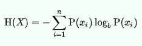
Bilgi Kazancı
Bilgi kazancı, bir rastgele değişken veya sinyalle ilgili olarak başka bir rastgele değişkeni gözlemleyerek elde edilen bilgi miktarı olarak tanımlanabilir. Ebeveyn düğümün entropisi ile çocuk düğümlerin ağırlıklı ortalama entropisi arasındaki fark olarak düşünülebilir.
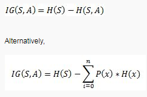
Gini Safsızlığı
Gini safsızlığı, kümeden rastgele seçilen bir elemanın, alt kümedeki etiketlerin dağılımına göre rastgele etiketlendiğinde ne sıklıkla yanlış etiketleneceğinin bir ölçüsüdür.
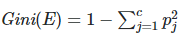
Gini safsızlığı 0 ile alt sınırlıdır ve veri kümesi yalnızca bir sınıf içeriyorsa 0 olur.
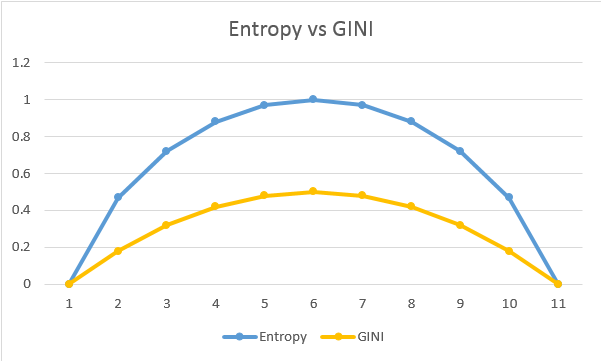
Karar ağacı oluşturmak için birçok algoritma vardır. Bunlar:
- CART (Sınıflandırma ve Regresyon Ağaçları) — Bu, metrik olarak Gini safsızlığını kullanır.
- ID3 (Yinelemeli Bölücü 3) — Bu, metrik olarak entropi ve bilgi kazancını kullanır.
Bu makalede ID3’ü ele alacağım. Bunu anladıktan sonra, aynısını CART kullanarak uygulamak kolay olacaktır.
ID3 algoritması kullanarak sınıflandırma
Futbol oynayıp oynamama kararını belirleyeceğimiz bir veri setini düşünün.
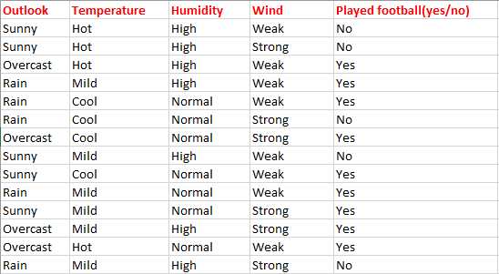
Burada bağımlı değişkeni belirlemek için dört bağımsız değişken vardır. Bağımsız değişkenler Hava Durumu, Sıcaklık, Nem ve Rüzgardır. Bağımlı değişken ise futbol oynayıp oynamama durumudur.
İlk adım olarak, karar ağacımız için ebeveyn düğümü bulmalıyız. Bunun için şu adımları izleyin:
Sınıf değişkeninin entropisini bulun.
E(S) = -[(9/14)log(9/14) + (5/14)log(5/14)] = 0.94
not: Burada genellikle 2 tabanında logaritma alırız. Burada toplam 14 evet/hayır var. Bunların 9’u evet ve 5’i hayır. Buna dayanarak yukarıdaki olasılığı hesapladık.
Yukarıdaki verilerden hava durumu için aşağıdaki tabloyu kolayca elde edebiliriz:
Şimdi ağırlıklı ortalama entropiyi hesaplamamız gerekiyor. Yani, her özelliğin ağırlıklarının olasılıklarla çarpımının toplamını bulduk.
E(S, hava durumu) = (5/14)E(3,2) + (4/14)E(4,0) + (5/14)*E(2,3) = (5/14)(-(3/5)log(3/5)-(2/5)log(2/5))+ (4/14)(0) + (5/14)((2/5)log(2/5)-(3/5)log(3/5)) = 0.693
Bir sonraki adım bilgi kazancını bulmaktır. Bu, ebeveyn entropisi ile yukarıda bulduğumuz ağırlıklı ortalama entropi arasındaki farktır.
IG(S, hava durumu) = 0.94 - 0.693 = 0.247
Benzer şekilde Sıcaklık, Nem ve Rüzgar için Bilgi Kazancını bulun.
IG(S, Sıcaklık) = 0.940 - 0.911 = 0.029
IG(S, Nem) = 0.940 - 0.788 = 0.152
IG(S, Rüzgar) = 0.940 - 0.8932 = 0.048
Şimdi en büyük entropi kazancına sahip özelliği seçin. Burada bu Hava Durumu’dur. Dolayısıyla karar ağacımızın ilk düğümünü (kök düğüm) oluşturur.
Şimdi verilerimiz şu şekilde görünüyor:
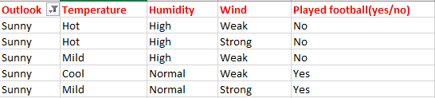
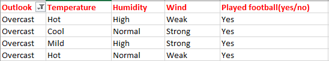
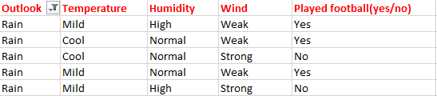
Bulutlu sadece ‘Evet’ sınıfına ait örnekler içerdiğinden, bunu evet olarak ayarlayabiliriz. Yani hava durumu bulutlu ise futbol oynanacak demektir. Şimdi karar ağacımız şu şekilde görünüyor:
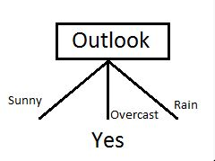
Bir sonraki adım, karar ağacımızdaki bir sonraki düğümü bulmaktır. Şimdi güneşli altında bir tane bulacağız. Sıcaklık, Nem veya Rüzgardan hangisinin daha yüksek bilgi kazancına sahip olduğunu belirlememiz gerekiyor.
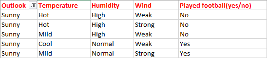
Ebeveyn entropisini hesaplayın E(güneşli)
E(güneşli) = (-(3/5)log(3/5)-(2/5)log(2/5)) = 0.971.
Şimdi Sıcaklığın bilgi kazancını hesaplayın. IG(güneşli, Sıcaklık)
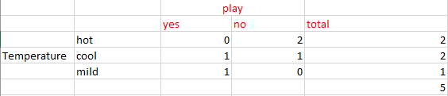
E(güneşli, Sıcaklık) = (2/5)E(0,2) + (2/5)E(1,1) + (1/5)*E(1,0)=2/5=0.4
Şimdi bilgi kazancını hesaplayın.
IG(güneşli, Sıcaklık) = 0.971–0.4 =0.571
Benzer şekilde şunları elde ederiz:
IG(güneşli, Nem) = 0.971
IG(güneşli, Rüzgar) = 0.020
Burada IG(güneşli, Nem) en büyük değerdir. Bu nedenle Nem, güneşli altına gelen düğümdür.
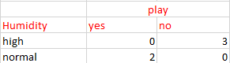
Nem için yukarıdaki tablodan, nem normal ise oyunun gerçekleşeceğini ve yüksek ise gerçekleşmeyeceğini söyleyebiliriz. Benzer şekilde, yağmurlu altındaki düğümleri bulun.
Not: Entropisi 0’dan büyük olan bir dal daha fazla bölünmeye ihtiyaç duyar.
Sonuç olarak, karar ağacımız aşağıdaki gibi görünecektir:
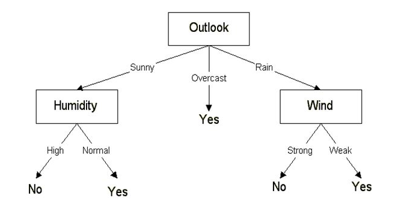
CART algoritması kullanarak sınıflandırma
CART kullanarak sınıflandırma buna benzerdir. Ancak entropi yerine Gini safsızlığını kullanırız.
İlk adım olarak karar ağacımızın kök düğümünü bulacağız. Bunun için sınıf değişkeninin Gini indeksini hesaplayın
Gini(S) = 1 - [(9/14)² + (5/14)²] = 0.4591
Bir sonraki adım olarak, Gini kazancını hesaplayacağız. Bunun için önce Hava Durumu, Sıcaklık, Nem ve Rüzgarın ağırlıklı ortalama Gini safsızlığını bulacağız.
İlk olarak Hava Durumu durumunu ele alalım
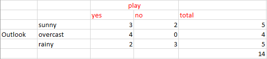
Gini(S, hava durumu) = (5/14)gini(3,2) + (4/14)gini(4,0)+ (5/14)gini(2,3) = (5/14)(1 - (3/5)² - (2/5)²) + (4/14)*0 + (5/14)(1 - (2/5)² - (3/5)²)= 0.171+0+0.171 = 0.342
Gini kazancı (S, hava durumu) = 0.459 - 0.342 = 0.117
Gini kazancı(S, Sıcaklık) = 0.459 - 0.4405 = 0.0185
Gini kazancı(S, Nem) = 0.459 - 0.3674 = 0.0916
Gini kazancı(S, rüzgar) = 0.459 - 0.4286 = 0.0304
Daha yüksek Gini kazancına sahip olanı seçin. Hava durumu için Gini kazancı daha yüksektir. Bu yüzden onu kök düğümümüz olarak seçebiliriz.